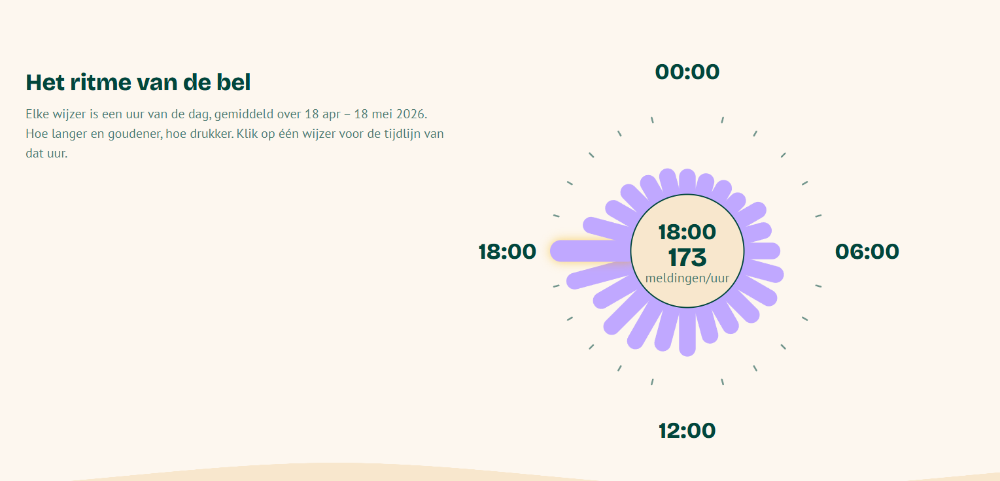

J. GERTH · CMD '26
J. GERTH · CMD '26
PORTFOLIO / 2026
Communication & Multimedia Design student UX-designerUX Designer Frontend-developerFrontend Developer Creatieve denkerCreative thinker
Op deze site vind je meer over mij en de projecten die ik heb gemaakt.
On this site you'll find more about me and the projects I've built.
- Status
- Open · stage sep '26Open · internship Sep '26
- Focus
- UX × Frontend
- LocatieLocation
- Hoofddorp, NL
- Contact
- julger04@gmail.com
Over mijAbout me
Mijn naam is Julius Gerth en ik ben vierdejaarsstudent Communication & Multimedia Design aan de Hogeschool van Amsterdam. Ik zit het liefst op het snijvlak van ontwerp en techniek: een interface bedenken én hem daarna zelf werkend bouwen.
My name is Julius Gerth and I'm a fourth-year Communication & Multimedia Design student at the Amsterdam University of Applied Sciences. I like to work where design meets technology: coming up with an interface and then building it myself.
Buiten school vind je me op het rugbyveld of achter het stuur — ik ben onderdeel van een simrace-esportteam. Daarnaast speel ik graag strategiegames, juist omdat ze me dwingen om in de meest stressvolle situaties helder te blijven denken. Dat is een vaardigheid die tijdens deadlines en hackathons verrassend goed van pas komt. Verder fotografeer ik graag en kijk ik veel films.
Outside of school you'll find me on the rugby pitch or behind the wheel — I'm part of a sim racing esports team. I also enjoy strategy games, precisely because they force me to keep thinking clearly in the most stressful situations. That's a skill that comes in surprisingly handy during deadlines and hackathons. Beyond that I love photography and film — a passion you'll recognise in my Movie Matching project.
Op zoek naar een afstudeerstage — vanaf september 2026, op het snijvlak van UX-design en frontend-development. Denk je dat ik bij jouw team pas? Ik hoor graag van je.
Looking for a graduation internship — starting September 2026, at the intersection of UX design and frontend development. Think I'd be a good fit for your team? I'd love to hear from you.
Mijn projectenMy projects
Code / Frontend·5
01Visdeurbel
Live
React · D3.js · Vite · Design tokens Design tokens & 24-uurs klokvisualisatie voor een data-verhaal over de Visdeurbel.Design tokens & 24-hour clock visualization for a data story about the Fish Doorbell. Lees meer →Read more → 02Browser Tech
Live
Solar System
Live
Movie Matching
DossierCase Node.js · Express · MongoDB · EJS · TMDB
Films & series ontdekken — full-stack.Discover movies & series — full-stack.
Lees meer →Read more →
05
Node.js · Express · MongoDB · EJS · TMDB
Films & series ontdekken — full-stack.Discover movies & series — full-stack.
Lees meer →Read more →
05
Hackathon
Live
Design / UX·2
06Design System
DossierCase Design System Figma · Componenten & stijlenFigma · Components & styles Herbruikbare UI in Figma.Reusable UI in Figma. Lees meer →Read more → 07UX-workshop met VitaliUX workshop with Vitali
DossierCase Waarde-architectuur · ROI · BelanghebbendenValue architecture · ROI · Stakeholders
De impact van UX meetbaar maken.Making the impact of UX measurable.
Lees meer →Read more →
Waarde-architectuur · ROI · BelanghebbendenValue architecture · ROI · Stakeholders
De impact van UX meetbaar maken.Making the impact of UX measurable.
Lees meer →Read more →